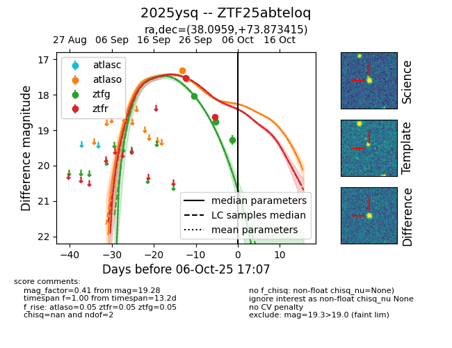
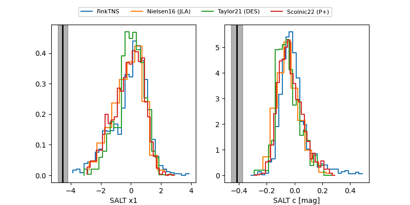

FINK: ZTF25abteloq
Lasair: ZTF25abteloq
ALeRCE: ZTF25abteloq
TNS: 2025ysq
YSE: 2025ysq
ZTF25abteloq (ztf,fink)
2025ysq (tns,yse)
equatorial (ra, dec) = (38.0959,+73.87342)
galactic (l, b) = (129.8959,+12.38219)


last atlaso=17.54, ztfg=19.28, ztfr=18.62
2 atlaso, 3 ztfg, 2 ztfr detections